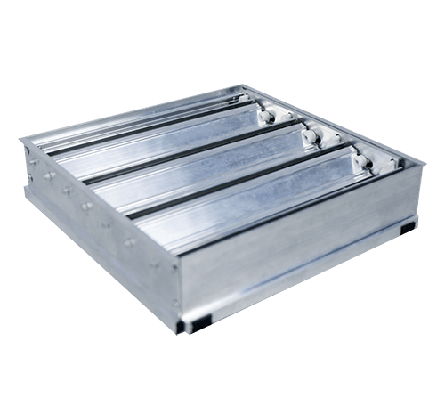

Вентиляционные решетки и аксессуары
Решетка однорядная ГАЛ-1Р (ЭКО)
Решётка ГАЛ-1Р ЭКО имеет стальной корпус с алюминиевыми ламелями, окрашенными в любой цвет по каталогу RAL. Основное предназначение однорядных вентиляционных решёток ГАЛ-1Р ЭКО является распределение притока и вытяжки воздуха в любом помещении. Вентиляционные однорядные решётки ГАЛ-1Р ЭКО могут быть установлены практически в любых помещениях от жилых в квартирах и домах до нежилых в офисах и помещениях производства.
Цена по запросу
Оставить заявку
Одним из основных требований, предъявляемых к вентиляционным решёткам, является эстетический внешний вид и благодаря своей эргономике ГАЛ-1Р ЭКО впишутся в любой интерьер. Металлические вентиляционные решётки ГАЛ-1Р ЭКО надежнее и долговечнее, чем аналогичная продукция из пластика. По умолчанию, решётки ГАЛ-1Р ЭКО окрашиваются термоусадочным порошковым покрытием в белый цвет, но по желанию заказчика, решётки могут быть окрашены в любой другой цвет по каталогу RAL.
Клапан расхода воздуха
На любую решетку дополнительно ставится клапан расхода воздуха (КРВ) Клапан позволяет регулировать расход на решетке или перекрыть ее.
